Docker
参考：慕课网 - 第一个docker化的java应用
制作日期：2018-08-22 - 2018-08-24
制作人：小邹[yw_forgit@163.com]
Docker 是一个开源的应用容器引擎，让开发者可以打包他们的应用以及依赖包到一个可移植的容器中，然后发布到任何流行的Linux机器上，也可以实现虚拟化，容器是完全使用沙箱机制，相互之间不会有任何接口。
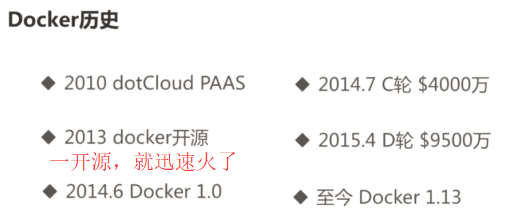
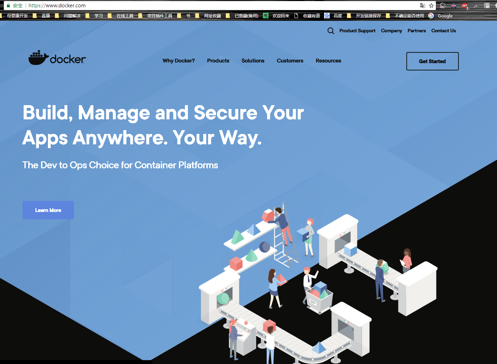
a）运输方式
b）存储方式
c）API方式
1）我本地运行没问题啊！
Docker会将操作系统、jdk.、Tomcat.、代码、配置文件等，一起放到集装箱，然后放到鯨鱼上运输，另一个环境通过命令拿到该集装箱直接运行即可，就不会有环境的问题。
2）系统好卡，哪个哥们又写死循环了？！
Docker会给每个程序限定CPU、内存等，如果该程序死循环耗尽资源就会被杀死，不会影响其他程序的资源。
3）双11来了，服务器撑不住啦！
直接可以通过Docker在一台或者多台主机上配置多个程序，无需配置jdk、Tomcat等环境，几条命令即可实现多个程序启动。
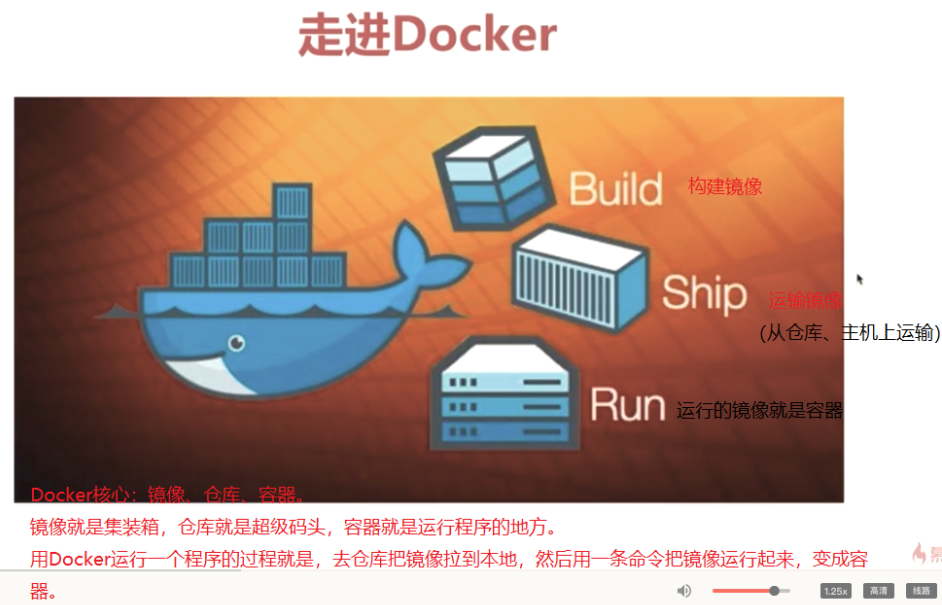
文件系统
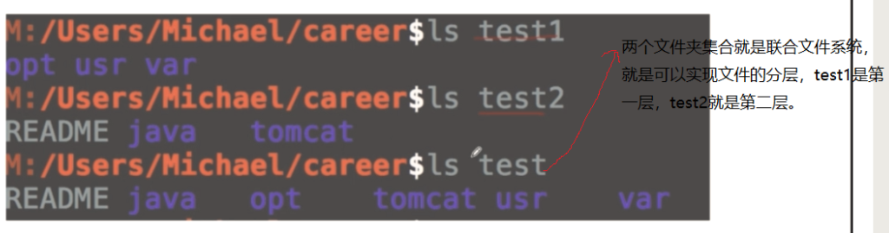
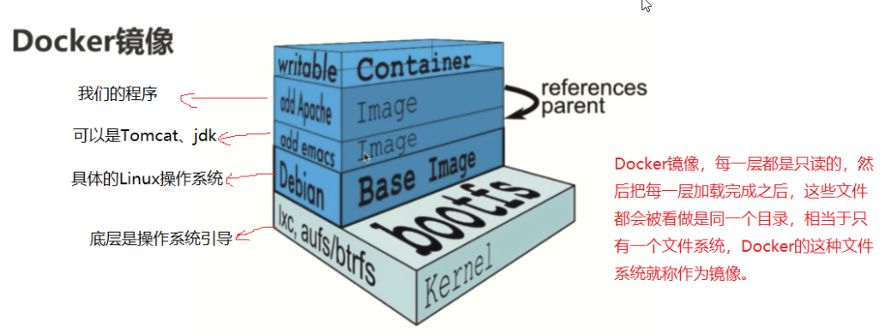
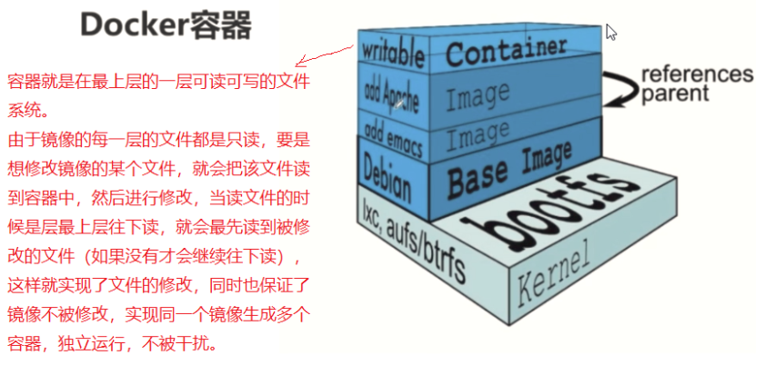
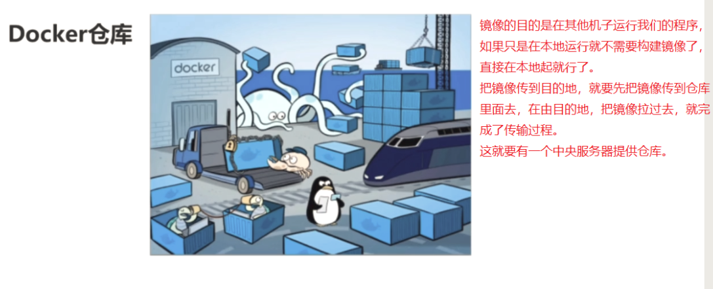
Docker仓库（中央仓库）
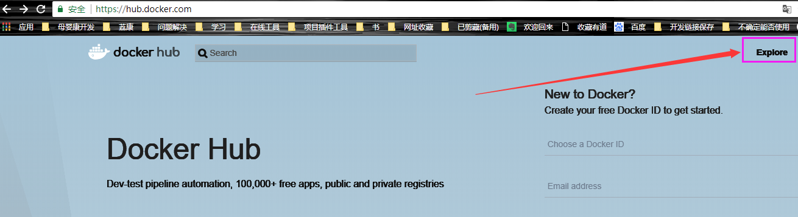
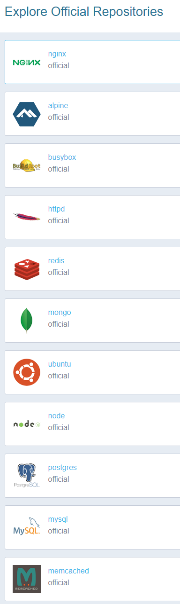
国内镜像也有
官方对Windows10做了原生的支持，10以前的都是原生支持的。
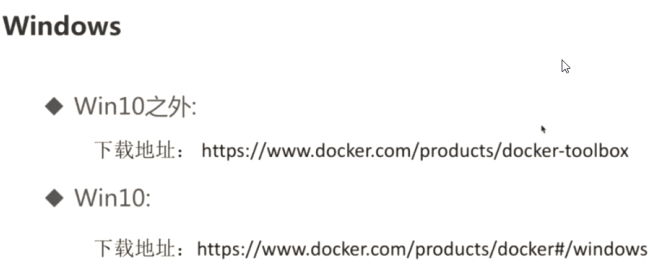
非Windows10
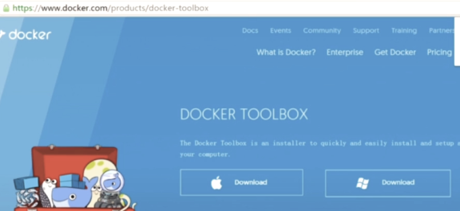
安装
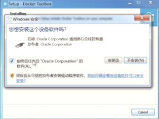
运行
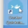
要是等待很久
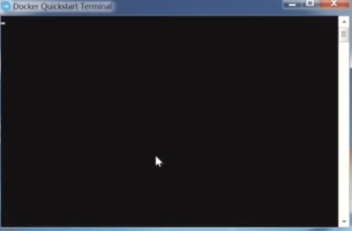
就自己去下载这个
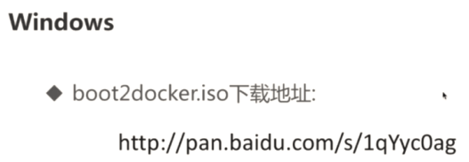
下载完放到这里
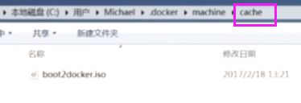
再重新运行
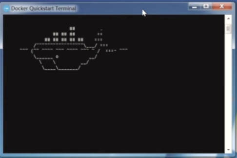
用CMD敲命令
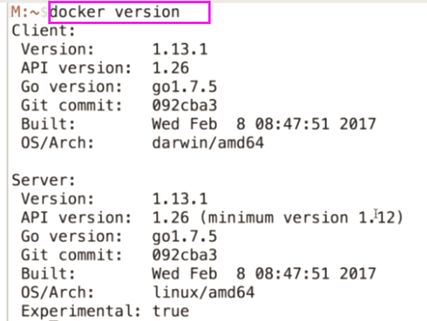
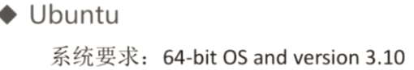
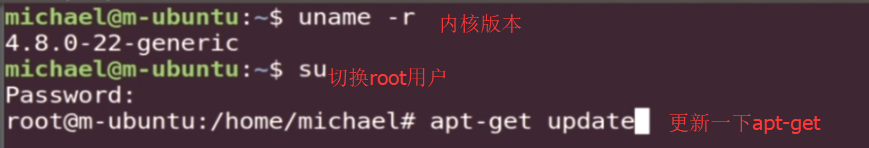
安装系统自带的Docker版本
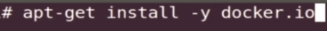
这是安装最新版本
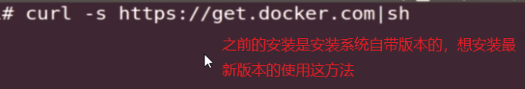
还差一个Server
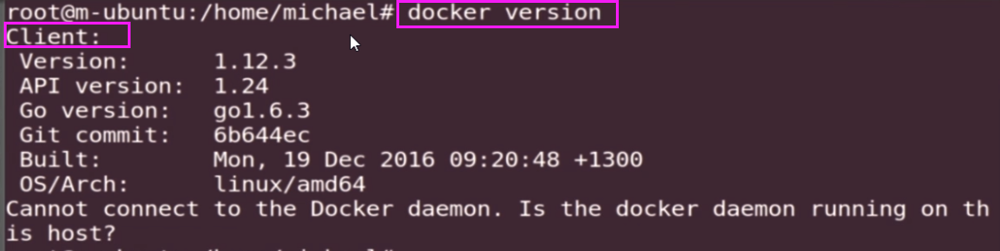
启动Server
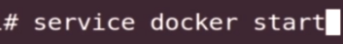
再看下
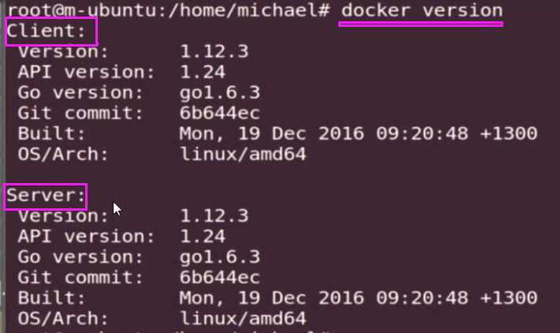
|
// 64位系统，内核要在3.10+，我这里是3.10符合，我的是CentOS7 [root@localhost
~]# uname -r 3.10.0-862.el7.x86_64 // 安装需要的软件包 #yum-util提供yum-config-manager功能 #另外两个是devicemapper驱动依赖的 [root@localhost
~]# yum install -y yum-utils
device-mapper-persistent-data
lvm2 // 设置yum源 [root@localhost
~]# yum-config-manager
--add-repo https://download.docker.com/linux/centos/docker-ce.repo Loaded plugins:
fastestmirror adding repo from: https://download.docker.com/linux/centos/docker-ce.repo grabbing file https://download.docker.com/linux/centos/docker-ce.repo to
/etc/yum.repos.d/docker-ce.repo repo saved to /etc/yum.repos.d/docker-ce.repo 如果报错： Loaded plugins: fastestmirror adding repo from:
https://download.docker.com/linux/centos/docker-ce.repo grabbing file https://download.docker.com/linux/centos/docker-ce.repo
to /etc/yum.repos.d/docker-ce.repo Could not fetch/save url
https://download.docker.com/linux/centos/docker-ce.repo to file
/etc/yum.repos.d/docker-ce.repo: [Errno 12] Timeout on https://download.docker.com/linux/centos/docker-ce.repo:
(28, 'Operation timed out after 30002 milliseconds with 0 out of 0 bytes
received') 就配置阿里云镜像吧 # yum-config-manager --add-repo
http://mirrors.aliyun.com/docker-ce/linux/centos/docker-ce.repo // 安装最新版本 [root@localhost
~]# yum install -y
docker-ce // 启动docker [root@localhost
~]# systemctl start docker.service
// 验证安装是否成功(有client和service两部分表示docker安装启动都成功了) [root@localhost
~]# docker version Client: Version: 18.06.1-ce API
version: 1.38 Go version: go1.10.3 Git commit: e68fc7a Built: Tue Aug 21 17:23:03 2018 OS/Arch: linux/amd64 Experimental: false Server: Engine: Version: 18.06.1-ce API
version: 1.38 (minimum
version 1.12) Go
version: go1.10.3 Git
commit: e68fc7a Built: Tue Aug 21 17:25:29 2018 OS/Arch: linux/amd64
Experimental: false [root@localhost ~]# |
我手里CentOS7有两个，用了一个ping不通网络的机子来操作（但是之前是能ping通的，哇，好奇怪啊），报了下面的错误，搞死自己。
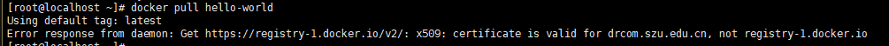
官方仓库，搜索hello-world
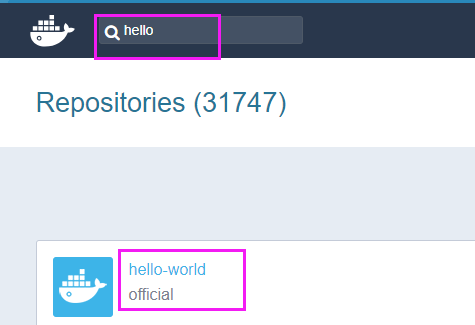
阿里云的仓库也有Docker官方仓库的hello-world。我用了公司的阿里云账号，据说用自己的支付宝账号登录也是可以的。
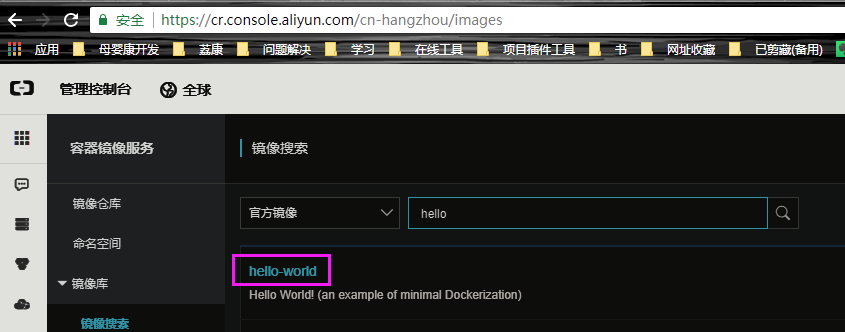
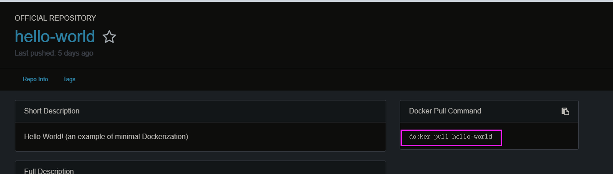
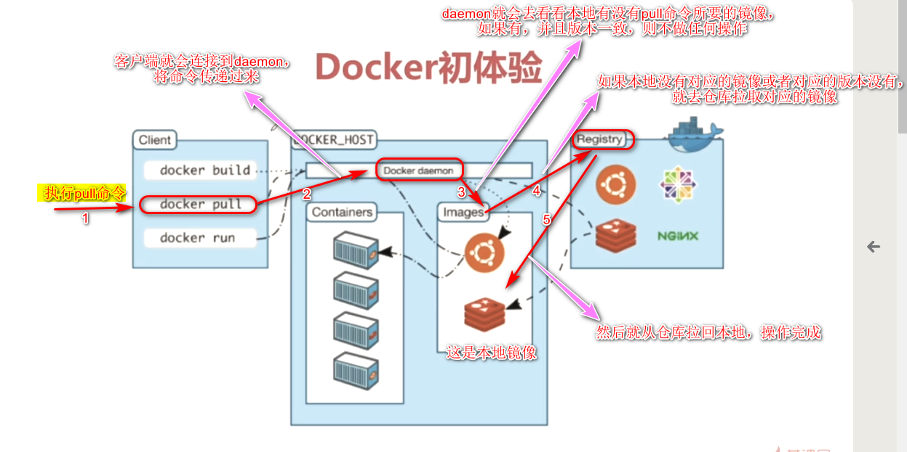
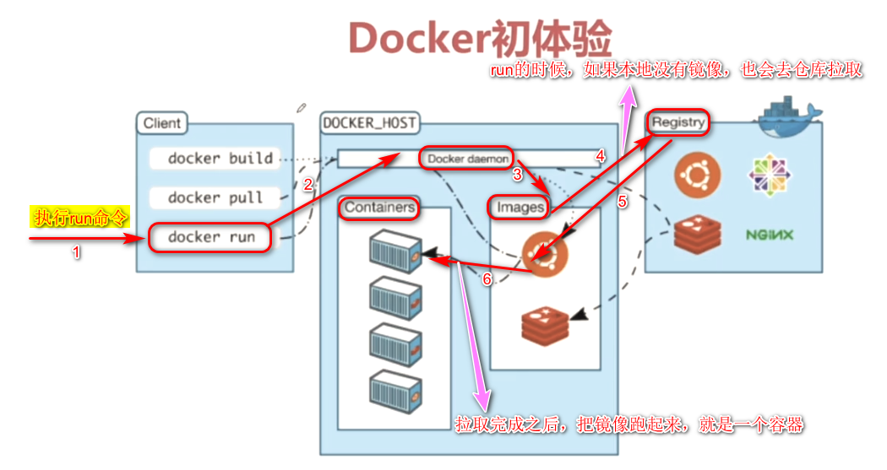
docker pull [OPTIONS]
NAME[:TAG] // 拉取镜像，:TAG是在镜像名称后面+冒号+版本，省略就是使用最新版的镜像。
docker images [OPTIONS]
[REPOSITORY[:TAG]] // 查看本地有什么镜像，拉取镜像之后，可以查看是否拉取成功。
docker run [OPTIONS]
IMAGE[:TAG] [COMMAND] [ARG] // 运行镜像就是一个Docker容器了
|
// 拉取镜像 // 默认是Docker中央仓库拉取，但是我配了阿里云镜像，应该是去阿里云拉取。hello-world这是镜像名称，也是仓库有的 [root@localhost
~]# docker pull hello-world Using default tag:
latest latest:
Pulling from library/hello-world 9db2ca6ccae0: Pull
complete Digest:
sha256:4b8ff392a12ed9ea17784bd3c9a8b1fa3299cac44aca35a85c90c5e3c7afacdc Status:
Downloaded newer image for hello-world:latest // 查看本地镜像。就一个hello-world [root@localhost
~]# docker images REPOSITORY TAG IMAGE ID CREATED SIZE hello-world latest 2cb0d9787c4d 6 weeks
ago 1.85kB // 运行镜像就是一个容器了 [root@localhost
~]# docker run hello-world // 输入这一句话 Hello from Docker! This message shows that your installation appears
to be working correctly. // 运行镜像经历了四个步骤： 1、Docker的客户端连接到了Docker的daemon； 2、daemon从Docker仓库拉取了“hello-world”镜像回来； 3、daemon从镜像中创建一个新的容器，该容器运行了“hello-world”里面的可执行文件，并且输出结果 4、daemon把输出结果返回给客户端，然后客户端将结果返回给终端，我们就能看到daemon返回的结果了。 To generate this
message, Docker took the
following steps: 1. The
Docker client contacted the Docker daemon. 2. The
Docker daemon pulled the "hello-world" image
from the Docker Hub. (amd64) 3. The
Docker daemon created a new
container from that image which runs the
executable that produces the output you are currently reading. 4. The
Docker daemon streamed that output to the Docker client, which
sent it to your
terminal. To try
something more ambitious, you
can run an Ubuntu container with: $ docker
run -it ubuntu bash Share images,
automate workflows, and
more with a free Docker ID: https://hub.docker.com/ For more examples and ideas, visit: https://docs.docker.com/engine/userguide/ [root@localhost ~]# |
持久运行的容器
前台挂起（hello-world） & 后台运行（Nginx）
进入容器内部 （命令：docker exec xxxx）
Linux用namespace来隔离环境，比如pid namespace用来隔离进程，mount namespace用来隔离文件系统，network namespace用来隔离网络。
Bridge（桥接）：会对每个容器隔离网络，防止相互干扰，默认的模式
Host：与主机公用，不隔离
None：完全不能访问
将主机的端口映射到容器里面的端口
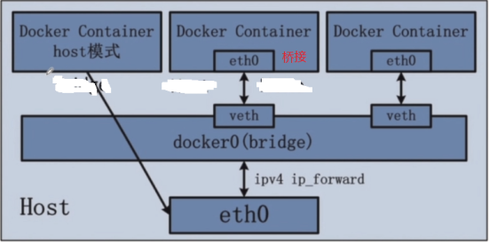
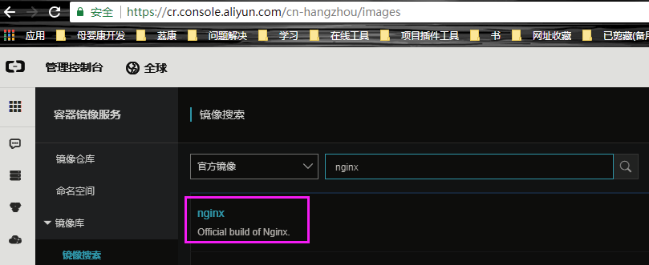
看下拉取镜像的命令
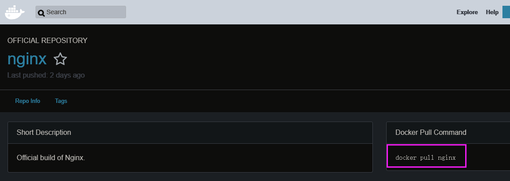
|
// 拉取nginx [root@localhost
~]# docker pull nginx Using default tag:
latest latest:
Pulling from library/nginx // 一直停在这里，下载不了 be8881be8156:
Downloading [===============================================> ] 21.14MB/22.49MB 32d9726baeef:
Download complete 87e5e6f71297:
Download complete // Ctrl+C强制退出，重新来还是不行 ^[[D^C [root@localhost
~]# docker pull nginx Using default tag:
latest latest:
Pulling from library/nginx be8881be8156:
Downloading [===============================================> ] 21.15MB/22.49MB 32d9726baeef:
Downloading [=============================================> ] 19.98MB/22.14MB 87e5e6f71297:
Download complete // 试了很多次不行，然后去网上找到一种这种方式，试了一下可以，后面的拉取镜像都可以使用daocloud.io+镜像名来拉取 [root@localhost
~]# docker pull daocloud.io/nginx Using default tag:
latest latest:
Pulling from nginx be8881be8156: Pull
complete 32d9726baeef: Pull
complete 87e5e6f71297: Pull
complete Digest:
sha256:4ffd9758ea9ea360fd87d0cee7a2d1cf9dba630bb57ca36b3108dcd3708dc189 Status:
Downloaded newer image for
daocloud.io/nginx:latest // 查看本地，拉取镜像是否成功 [root@localhost
~]# docker images REPOSITORY TAG IMAGE ID CREATED SIZE // 镜像的名称有点不一样，叫daocloud.io/nginx daocloud.io/nginx latest c82521676580 4 weeks
ago 109MB hello-world latest 2cb0d9787c4d 6 weeks
ago 1.85kB // 查看镜像是否启动，发现还没有的 [root@localhost
~]# docker ps CONTAINER ID IMAGE COMMAND CREATED STATUS PORTS NAMES // 查看docker run有什么参数 [root@localhost
~]# docker run --help Usage: docker run [OPTIONS] IMAGE
[COMMAND] [ARG...] Run a command in a new
container Options: 。。。。。。 // -d是后台运行，默认不指定是前台运行的。-d是--detach的简写 -d,
--detach
Run container in background and print container ID --detach-keys
string Override the key
sequence for detaching a
container --device
list Add a host device to the
container --device-cgroup-rule
list Add a rule to the cgroup
allowed devices list 。。。。。 // 指定端口映射，默认不指定的，是不可以在外面访问Docker的内容 -p,
--publish list
Publish a container's port(s) to the host // -P 是大写的，表示将Docker里面的被监听的的所有端口随机映射到主机上 -P,
--publish-all
Publish all exposed ports to random ports --read-only Mount the container's
root filesystem as read only 。。。。。 -t, --tty Allocate a pseudo-TTY --ulimit
ulimit Ulimit options (default []) -u, --user
string Username or
UID (format: <name|uid>[:<group|gid>]) 。。。。 // 运行镜像，就是容器了，返回一个进程的id，前面几位才是 [root@localhost
~]# docker run -d
daocloud.io/nginx f35aa3940d5518a721f263a3150dbdda31c973c9569d5e570168de434f17495d // 查看进程是否启动 [root@localhost
~]# docker ps CONTAINER ID IMAGE COMMAND CREATED STATUS PORTS NAMES f35aa3940d55 daocloud.io/nginx "nginx -g
'daemon of…" 3
seconds ago Up 3
seconds 80/tcp reverent_swanson // 查看进入程序内部的命令参数 [root@localhost
~]# docker exec --help Usage: docker exec [OPTIONS]
CONTAINER COMMAND [ARG...] Run a command in a running container Options: -d, --detach Detached mode: run
command in the background --detach-keys
string Override the key sequence for
detaching a container -e, --env
list Set environment
variables -i, --interactive Keep STDIN open even if not
attached --privileged Give extended privileges to the
command -t, --tty Allocate a pseudo-TTY -u, --user
string Username or UID (format: <name|uid>[:<group|gid>]) -w, --workdir
string Working directory inside
the container // 进入nginx程序内部。-i是交互式的意思，让我们能输入内容；-t是连接虚拟终端，显示内容给我们；f35就是进程id=f35aa3940d55（现在进程少，只有能唯一匹配即可）；bash是Linux脚本 [root@localhost
~]# docker exec -it f35
bash // 然后就会发现路径变了，变成了root@f35aa3940d55:/#。 ls之后可以看到很类似Linux的文件系统 root@f35aa3940d55:/# ls bin
boot dev etc home lib lib64 media
mnt opt proc root run
sbin srv sys
tmp usr var root@f35aa3940d55:/# pwd
/ // ps不支持，可能是这个nginx不支持 root@f35aa3940d55:/# ps
-ef bash: ps:
command not found // 退出程序内部 root@f35aa3940d55:/#
exit exit [root@localhost
~]# docker ps CONTAINER ID IMAGE COMMAND CREATED STATUS PORTS NAMES f35aa3940d55 daocloud.io/nginx "nginx -g
'daemon of…" 5
minutes ago Up 5
minutes 80/tcp reverent_swanson // 先停掉docker，因为启动nginx的时候不指定端口映射，是不能访问nginx的 [root@localhost
~]# docker stop f35 f35 [root@localhost
~]# docker ps CONTAINER ID IMAGE COMMAND CREATED STATUS PORTS NAMES // -p就是把访问本机（Linux主机）8080端口的请求映射到Docker内部容器的80端口上 [root@localhost
~]# docker run -d -p 8080:80
daocloud.io/nginx 322b9f4a000c8312f7521c44a34c900cb5aadd786ac1299a422c195c5b2ce2e2 [root@localhost
~]# docker ps CONTAINER ID IMAGE COMMAND CREATED STATUS PORTS NAMES 322b9f4a000c daocloud.io/nginx "nginx -g
'daemon of…" 12
seconds ago Up 12
seconds 0.0.0.0:8080->80/tcp nostalgic_varahamihira // 查看端口是否有监听 [root@localhost
~]# netstat -na|grep 8080 tcp6 0 0 :::8080 :::* LISTEN // 本机直接可以localhost+8080访问，返回的就是nginx的欢迎页面 [root@localhost
~]# curl localhost:8080 <!DOCTYPE
html> <html> <head> <title>Welcome
to nginx!</title> <style> body {
width: 35em;
margin: 0 auto;
font-family:
Tahoma, Verdana, Arial, sans-serif; } </style> </head> <body> <h1>Welcome
to nginx!</h1> <p>If you
see this page, the
nginx web server is successfully installed and working.
Further configuration is required.</p> <p>For
online documentation and support please refer to <a href="http://nginx.org/">nginx.org</a>.<br/> Commercial support is available at <a href="http://nginx.com/">nginx.com</a>.</p> <p><em>Thank
you for using nginx.</em></p> </body> </html> // 关闭防火墙，CentOS7默认使用firewalld [root@localhost
~]# systemctl stop firewalld // 查看ip，192.168.68.128就是本机虚拟机的ip，然后用其他机子访问 [root@localhost
~]# ifconfig docker0: flags=4163<UP,BROADCAST,RUNNING,MULTICAST> mtu 1500
inet 172.17.0.1 netmask 255.255.0.0 broadcast 172.17.255.255
inet6 fe80::42:e0ff:fea6:3c59 prefixlen 64 scopeid 0x20<link>
ether 02:42:e0:a6:3c:59 txqueuelen 0 (Ethernet) RX
packets 7 bytes 1174 (1.1 KiB) RX
errors 0 dropped 0 overruns 0 frame 0 TX
packets 11 bytes 812 (812.0 B) TX
errors 0 dropped 0
overruns 0 carrier 0 collisions 0 ens33: flags=4163<UP,BROADCAST,RUNNING,MULTICAST> mtu 1500
inet 192.168.68.128 netmask 255.255.255.0 broadcast 192.168.68.255
inet6 fe80::bbf5:91a3:a4e8:424 prefixlen 64 scopeid 0x20<link>
ether 00:0c:29:7b:60:d7 txqueuelen 1000 (Ethernet) RX packets 354369 bytes 402051975 (383.4 MiB) RX
errors 0 dropped 0 overruns 0 frame 0 TX
packets 118363 bytes 7818504 (7.4 MiB) TX
errors 0 dropped 0
overruns 0 carrier 0 collisions 0 lo: flags=73<UP,LOOPBACK,RUNNING> mtu 65536
inet 127.0.0.1 netmask 255.0.0.0
inet6 ::1 prefixlen 128 scopeid 0x10<host>
loop txqueuelen 1000 (Local
Loopback) RX
packets 74 bytes 7232 (7.0 KiB) RX
errors 0 dropped 0 overruns 0 frame 0 TX
packets 74 bytes 7232 (7.0 KiB) TX
errors 0 dropped 0
overruns 0 carrier 0 collisions 0 vethd39f24a: flags=4163<UP,BROADCAST,RUNNING,MULTICAST> mtu 1500
inet6 fe80::e840:b8ff:fedb:6e3b prefixlen 64 scopeid 0x20<link>
ether ea:40:b8:db:6e:3b txqueuelen 0 (Ethernet) RX
packets 7 bytes 1272 (1.2 KiB) RX
errors 0 dropped 0 overruns 0 frame 0 TX
packets 17 bytes 1280 (1.2 KiB) TX
errors 0 dropped 0
overruns 0 carrier 0 collisions 0 [root@localhost ~]# |
其他机子进入到nginx的欢迎页面。注意我的CentOS7是在Windows10上的虚拟机，谷歌浏览器也在Windows10，192.168.68.128是虚拟机centos7的ip，Windows10是不能用localhost访问的。CentOS7本机就可以。
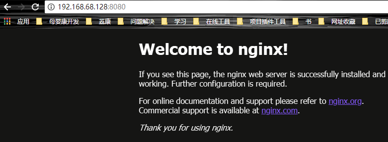
制作自己的镜像：
1）建立Dockerfile
2）使用docker build，构建
3）准备自己的war包
获取pull命令
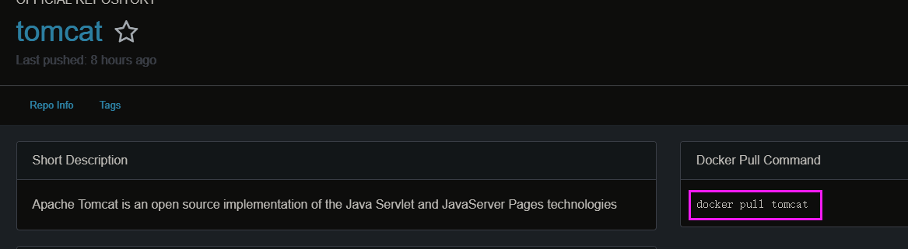
点击进入Tomcat镜像的描述，可以看到是放到Tomcat被放到 /usr/local/tomcat 下，Dockerfile用到。
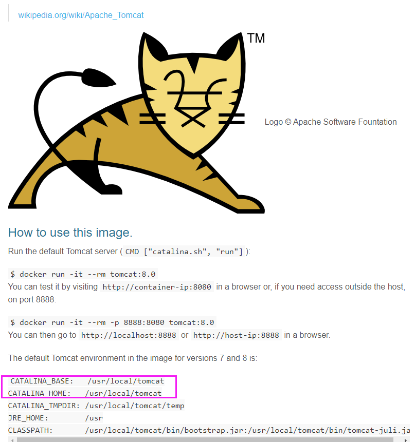
|
// 拉取Tomcat镜像。
Tomcat的运行需要java环境支持，故java环境就不用单独拉取了 [root@localhost
~]# docker pull tomcat Using default tag:
latest latest:
Pulling from library/tomcat 55cbf04beb70: Pull
complete 1607093a898c:
Downloading [==========================================> ] 9.157MB/10.74MB 9a8ea045c926:
Downloading [================> ] 1.449MB/4.336MB 1290813abd9d:
Download complete 8a6b982ad6d7:
Download complete abb029e68402:
Download complete d068d0a738e5:
Downloading [================================================> ] 118.4MB/122.1MB 42ee47bb0c52:
Waiting ae9c861aed25:
Waiting 60bba9d0dc8d:
Waiting 091c11d70257:
Waiting 869034383fc7:
Waiting // 还是拉取不了，强制退出 ^C // 使用daocloud.io/tomcat [root@localhost
~]# docker pull daocloud.io/tomcat
Using default tag:
latest latest:
Pulling from tomcat 55cbf04beb70: Pull
complete 1607093a898c: Pull
complete 9a8ea045c926: Pull
complete 1290813abd9d: Pull
complete 8a6b982ad6d7: Pull
complete abb029e68402: Pull
complete 8cd067dc06dc: Pull
complete 1b9ce2097b98: Pull
complete d6db5874b692: Pull
complete 25b4aa3d52c5: Pull
complete cb92b5a7cbd7: Pull
complete 7f4c6a7a42de: Pull
complete Digest:
sha256:f1c8dd225728c4bf5d551eebca00cfd290b15d025b4f91d6753ff733aee4eee3 Status:
Downloaded newer image for
daocloud.io/tomcat:latest // 查看是否拉取到 [root@localhost
~]# docker images REPOSITORY TAG IMAGE ID CREATED SIZE daocloud.io/tomcat latest f3159377bac1 3 weeks
ago 463MB daocloud.io/nginx latest c82521676580 4 weeks
ago 109MB hello-world latest 2cb0d9787c4d 6 weeks
ago 1.85kB // 编辑Dockerfile，build的时候是根据这个文件来的 [root@localhost
~]# vi Dockerfile // 文件内容 [root@localhost
~]# cat Dockerfile # 我们自己做的镜像是基于这个Tomcat的 from daocloud.io/tomcat # 作者信息 MAINTAINER xiaozou # 然后把我们的自定义的当前目录的testJava.war（后面会上传）复制到Tomcat的webapps（至于Tomcat在哪里，官方镜像描述有说），这是Tomcat的标准目录 COPY testJava.war /usr/local/tomcat/webapps
// 要上传我的war包，故安装rz工具 [root@localhost
~]# rz -bash: rz:
command not found [root@localhost
~]# yum install lrzsz -y // 上传 [root@localhost
~]# rz [root@localhost
~]# ll total 8088 -rw-------. 1 root
root 1285 Aug 23 07:31
anaconda-ks.cfg -rw-r--r--. 1 root
root 90 Aug 23 23:07
Dockerfile // 这个是就是我上传的文件 -rw-r--r--. 1 root
root 8271351 Aug 23 23:10
testJava.war // 构建自定义镜像，“.”表示在当前路径构建 [root@localhost
~]# docker build . // 会罗列Dockerfile的步骤是否完成 Sending build context to Docker daemon 8.282MB Step 1/3 : from
daocloud.io/tomcat --->
f3159377bac1 Step 2/3 :
MAINTAINER xiaozou --->
Running in 9411b7b13326 Removing intermediate container 9411b7b13326 ---> 210c0ebef24b Step 3/3 : COPY
testJava.war /usr/local/tomcat/webapps ---> 040873e18800 Successfully built 040873e18800 // 可以看到<none> 就是我构建的，因为没有指定名称 [root@localhost
~]# docker images REPOSITORY TAG IMAGE ID CREATED SIZE <none> <none> 040873e18800 25
seconds ago 471MB daocloud.io/tomcat latest f3159377bac1 3 weeks
ago 463MB daocloud.io/nginx latest c82521676580 4 weeks
ago 109MB hello-world latest 2cb0d9787c4d 6 weeks
ago 1.85kB // 指定名称，构建，发现名称必须是小写字母 [root@localhost
~]# docker build -t
testJava:latest . invalid argument "testJava:latest" for "-t,
--tag" flag:
invalid reference format:
repository name must be lowercase See 'docker build
--help'. // 那就小写吧，我妥协 [root@localhost
~]# docker build -t
testjava:latest . Sending build context to Docker daemon 8.282MB Step 1/3 : from
daocloud.io/tomcat --->
f3159377bac1 Step 2/3 :
MAINTAINER xiaozou ---> Using
cache ---> 210c0ebef24b Step 3/3 : COPY
testJava.war /usr/local/tomcat/webapps ---> Using
cache ---> 040873e18800 Successfully built 040873e18800 Successfully tagged testjava:latest // 可以看到testjava镜像 [root@localhost
~]# docker images REPOSITORY TAG IMAGE ID CREATED SIZE testjava latest 040873e18800 About a minute ago 471MB daocloud.io/tomcat latest f3159377bac1 3 weeks
ago 463MB daocloud.io/nginx latest c82521676580 4 weeks
ago 109MB hello-world latest 2cb0d9787c4d 6 weeks
ago 1.85kB // 运行镜像，映射容器端口8080（Tomcat默认是8080）为主机的8889 [root@localhost
~]# docker run -d -p 8889:8080
testjava a1f8c2f705e970c4a66986220eaa813c4191e7e1c35f0155f23f97db790e52e2 docker: Error
response from daemon:
driver failed programming external connectivity on endpoint reverent_sammet (ff3ce9ef97f3e0f1ae1df8102dfba42d353b98aaefb691bfeb2d4930bde63ec9): (iptables
failed: iptables --wait -t nat -A
DOCKER -p tcp -d 0/0 --dport 8888 -j DNAT
--to-destination
172.17.0.2:8080 ! -i
docker0: iptables: No
chain/target/match
by that name. (exit
status 1)). // 在网上找到一些解决方法说，只要重启docker服务之后，正确的iptables规则（之前的规则好像被破坏了，如果你删除了iptables中的docker链，或者iptables的规则被丢失了（例如重启firewalld））就会被创建出来。 // docker 服务启动的时候，docker服务会向iptables注册一个链，以便让docker服务管理的containner所暴露的端口之间进行通信 [root@localhost
~]# systemctl restart docker // 然后运行，就好了 [root@localhost
~]# docker run -d -p 8889:8080
testjava 57a34e3f072f067201534d0e8078056b38210b32b01523fd62510a1bfad14ac9 [root@localhost
~]# docker ps CONTAINER ID IMAGE COMMAND CREATED STATUS PORTS NAMES 57a34e3f072f testjava "catalina.sh
run" 57
seconds ago Up 56
seconds 0.0.0.0:8889->8080/tcp epic_jones // 根据进程id，进入我们的应用目录，看下 [root@localhost
~]# docker exec -it 57a bash root@57a34e3f072f:/usr/local/tomcat#
ll bash: ll:
command not found root@57a34e3f072f:/usr/local/tomcat#
ls LICENSE
NOTICE RELEASE-NOTES RUNNING.txt bin
conf include lib
logs native-jni-lib temp
webapps work root@57a34e3f072f:/usr/local/tomcat#
cd webapps/ root@57a34e3f072f:/usr/local/tomcat/webapps#
ls // 不要被eclipse的部署目录误导了，Tomcat默认是是按照war包的名称来解压项目的，testJava就是我的项目名称，访问的时候要加上该项目名称 ROOT
docs examples host-manager manager
testJava testJava.war root@57a34e3f072f:/usr/local/tomcat/webapps#
cd ROOT/ root@57a34e3f072f:/usr/local/tomcat/webapps/ROOT#
ls RELEASE-NOTES.txt asf-logo-wide.svg bg-middle.png bg-nav.png favicon.ico tomcat-power.gif tomcat.gif tomcat.svg WEB-INF
bg-button.png bg-nav-item.png bg-upper.png index.jsp
tomcat.css
tomcat.png root@57a34e3f072f:/usr/local/tomcat/webapps/ROOT#
cd .. root@57a34e3f072f:/usr/local/tomcat/webapps#
ls ROOT
docs examples host-manager manager
testJava testJava.war root@57a34e3f072f:/usr/local/tomcat/webapps#
cd testJava root@57a34e3f072f:/usr/local/tomcat/webapps/testJava#
ls META-INF WEB-INF index.html root@57a34e3f072f:/usr/local/tomcat/webapps/testJava# |
访问Tomcat首页
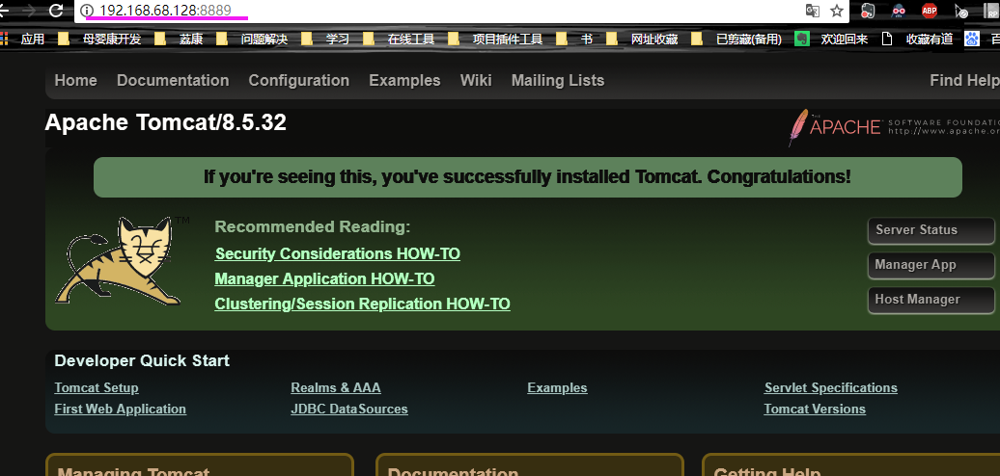
默认testJava.war被解压为testJava项目，访问项目也是带该项目名，除非解压到根目录就不用带项目名
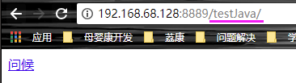
点击“问候”
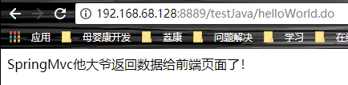
这项目本来在eclipse部署是这样访问的，注意不要被误导了。
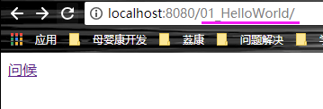